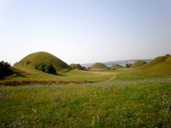

Près de la rivière Prut, entre les villages de Branishte et d'Avremen, de 8 km de long sur 2 km de large, de nombreuses collines se dressent à une hauteur de 15 à 30 m, formant ainsi un spectacle de sol ondulant. Les rangées formées de ces buttes sont parallèles au Prut. La vallée des cent collines est un paysage de grande valeur scientifique et esthétique. Il existe un débat scientifique sur la formation de ces buttes. Certains spécialistes affirment que la vallée des Cent collines est le seul endroit en Europe où se concentrent un grand nombre de récifs sous-marins méditerranéens - le bassin d’eau tertiaire, qui couvrait alors le territoire actuel de la République de Moldova il ya environ 20 millions d’années. D'autres scientifiques pensent que les buttes ont été formées à la suite de glissements de terrain et de glissements de terrain. Ce paysage unique est situé du côté de la vallée de la rivière Prut, au sud-est des villages de Branishte et d'Avremen, dans le comté de Balti.


La vallée de Sta Kholmov a une longueur de 8 km et une largeur de 2,3 à 1,7 km. Son originalité est imprimée sur plusieurs microformes de relief: 3 500 collines particulièrement allongées, prononcées, avec des pentes raides et des hauteurs allant de 1 à 30 m. m comme exemple, "Gypsy hill". Le paysage se compose de 6 terrasses Prut, marquées à une altitude de 50-60 mètres à 160-170 mètres de pente de prairie et couvre une superficie de 1600 hectares. Les bandes entre les rangées de monticules (collines) sont faiblement ondulées. Les collines et les rangs formés par eux sont parallèles à la vallée de Prut. Une des légendes raconte qu’il y avait de violentes batailles et ils ont enterré leurs héros victorieux, élevant ces monticules: pour les plus ordinaires - les plus petits, pour les dirigeants - les plus grands. "